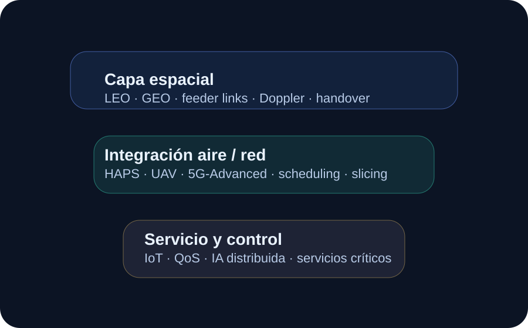
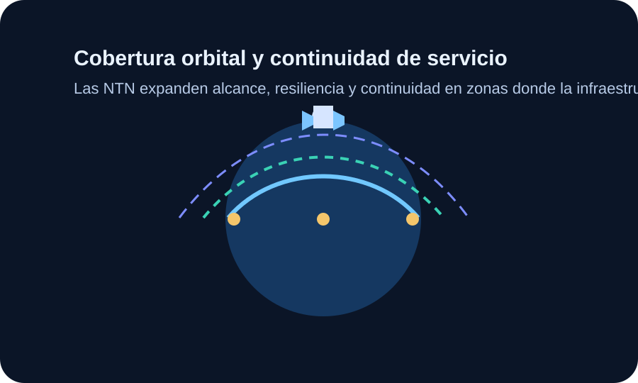
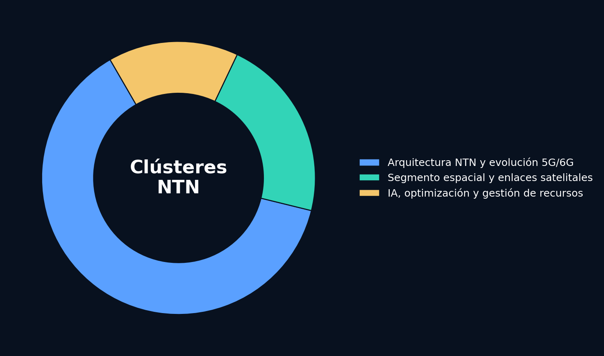
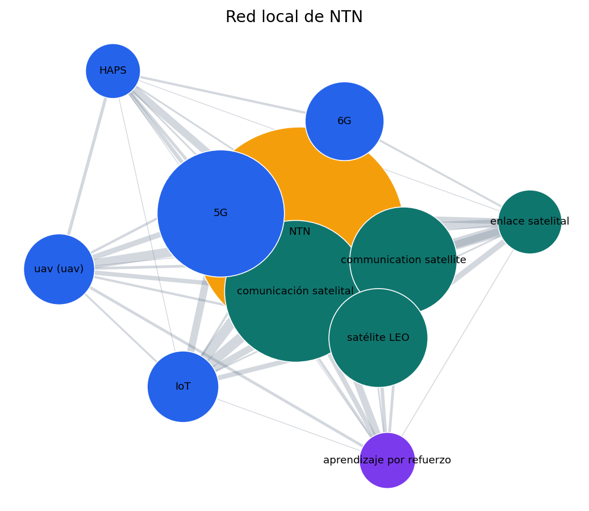
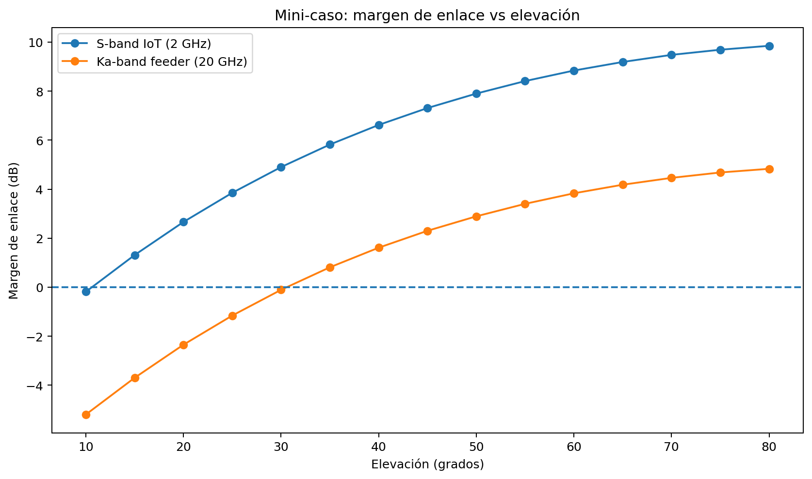

Pregunta guía
Dashboard principal
Exploración por pestañas
Cada panel concentra una parte del proyecto para evitar una navegación plana y convertir el blog en una experiencia más intuitiva.
Bibliometría
Visualización
Laboratorio
Objetivo general
Dirección analítica
Equipo
Integrantes
Objetivos específicos
Ruta de trabajo
Glosario
Conceptos esenciales
Alcance
Qué cubre este blog
Vista rápida
Capas de la conversación NTN

Consulta base
Cadena de búsqueda
Proceso ejecutado
Normalización
Términos retirados
| Término | Frecuencia | Motivo |
|---|
Ruta metodológica
Fases del análisis
Integración técnica
Capas de decisión

Balance del mapa
Distribución por clústeres

Interpretación
Lectura del espacio temático
Explorador
Análisis por palabras
Imagen focal
Red asociada a NTN

Metacognición
Aprendizajes del proceso
Proyección profesional
Lecciones aplicables
Laboratorio NTN
Mini-caso, video y referencias
Este bloque mantiene el enfoque práctico y documental del proyecto sin romper la experiencia visual del sitio.
Caso aplicado
Supuestos
Hallazgos

Simulador
Calculadora de enlace
Sustentación visual
Microvideo del proyecto
Estructura audiovisual
Recorrido del video
01Panorama NTN y propósito del proyecto
02Depuración del conjunto bibliográfico
03Clústeres y términos dominantes
04Mini-caso técnico y lectura de resultados
Fuentes consultadas